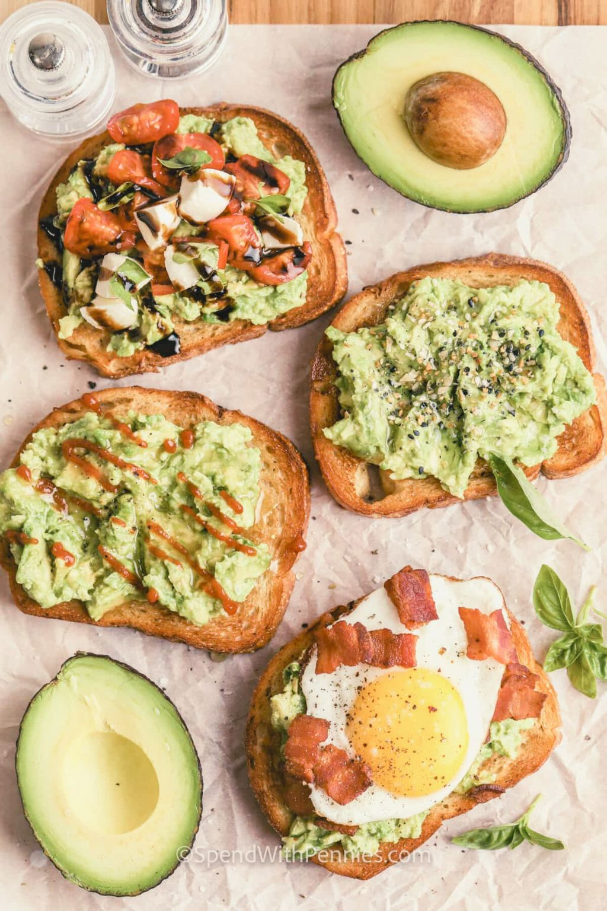

Home
Friendship Frittata with Faux-Friends Filling
This frittata is packed with layers of fake smiles and shallow compliments, topped with a sprinkle of envy-inducing brunch photos.
Ingredients include:fabricated friendships, superficial likes, and artificially sweetened conversations, all cooked in a pan of social validation.
Warning: Consumption may lead to a sudden urge to overshare your life updates and a false sense of connection with distant acquaintances.
Filtered Fruit Salad Fiasco

A colorful assortment of genetically modified fruits, meticulously arranged and drenched in a syrupy blend of artificial sweetness.
Ingredients include: envy-inducing mangoes, carefully curated strawberries, and perfectly posed blueberries, all topped with a dollop of faux-freshness.
Warning: Excessive consumption may lead to a distorted perception of reality, a craving for validation through likes, and an inexplicable urge to pose with produce.
Clickbait Croissant with Faux-Excitement Filling
A flaky croissant filled with exaggerated promises of flavor, coated in a glossy layer of faux-excitement.
Ingredients include: overstated chocolate chips, hyperbolic hazelnut spread, and sensationalized sprinkles, all wrapped in a golden crust of inflated expectations.
Warning: Excessive consumption may lead to disappointment and a persistent craving for unsubstantiated content.
Drinks
Tweetable Tacos with Faux-Followers Filling
Miniature tacos filled with artificially inflated ingredients, topped with a sprinkle of superficial engagement.
Ingredients include: overstated avocado, hyperbolic cheese, and sensationalized salsa, all wrapped in a crispy shell of virtual validation.
Warning: Excessive consumption may lead to a distorted sense of popularity and an insatiable craving for retweets.
Disappearing Donuts with Faux-Friends Filling
These donuts are as fleeting as the friendships that vanish after 24 hours. Each bite is filled with artificially sweetened conversations, superficial likes, and a sprinkle of filtered memories.
Ingredients include: ephemeral connections, temporary validation, and a hint of curated moments.
Warning: Consuming these donuts may leave you craving validation that disappears faster than a disappearing snap.
Trendy TikTok Toast with Faux-Followers Topping
This toast captures the ephemeral allure of TikTok trends, adorned with artificially enhanced toppings that promise fleeting fame, superficial likes sprinkled on for validation, and a hint of glamorous glitter for that extra allure.
Ingredients include artificially enhanced toppings, superficial likes, and a sprinkle of glamorous glitter.
Warning: Consuming this toast may leave you craving validation that fades faster than a trending TikTok video.